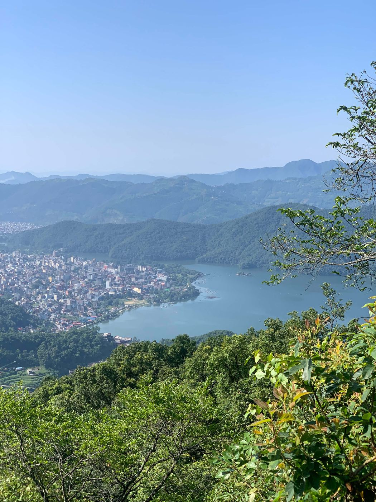

The Day Everything Changed
Every journey begins with a single step, but mine began with a single boarding pass. For most people, an airport is simply the beginning of another trip. For me, it was the place where one chapter of my life ended and another quietly began.
On April 6, 2017, I arrived at Tribhuvan International Airport in Kathmandu carrying only one suitcase, my passport, and dreams that felt much bigger than I was. Everything I owned fit inside that single bag, yet what I carried inside my heart was impossible to measure — excitement, fear, hope, and uncertainty all travelled with me that day.
The departure hall was alive with movement. Families hugged one another. Friends smiled through tears. Children watched airplanes through the large glass windows, while flight announcements echoed across the terminal and passengers hurried toward their boarding gates. I stood quietly among them, holding my passport a little tighter than usual. For the first time in my life, I was leaving Nepal.

Until that day, my world had been familiar: the mountains surrounding Pokhara, the streets I walked every day, the voices of my family, the comfort of speaking my own language. Everything that had shaped my childhood and early adulthood would soon become memories viewed from thousands of kilometres away.
Ahead of me was Japan — a country I had only seen in books, documentaries, photographs, and television. A country whose language I barely understood and whose culture seemed completely different from everything I had ever known. I didn't know exactly what waited for me there. I only knew that my future depended on having the courage to leave the life I already knew.
As boarding time approached, I slowly walked toward the departure gate. Each step felt strangely heavy. I wasn't simply walking toward an airplane — I was walking toward uncertainty, toward new opportunities, toward challenges I couldn't yet imagine. Soon, it was time to board. As I stepped through the gate, I paused for a brief moment and looked back one last time. Behind me was the country where I had spent my entire life. Ahead of me was a future I couldn't yet see. I quietly whispered goodbye to Nepal, not knowing when I would stand on its soil again.
I found my seat beside the airplane window and fastened my seatbelt. Everything felt new — the cabin, the sound of the engines, the flight attendants speaking different languages, and the feeling of sitting inside an aircraft for the very first time. My heart beat faster as the plane slowly pushed away from the gate. The aircraft moved toward the runway, and outside the window I watched the airport buildings slowly pass by. Within moments, the engines roared with incredible power. The plane accelerated faster and faster until suddenly the ground disappeared beneath us. For the first time in my life, I was flying.
As the aircraft climbed higher into the sky, I watched Nepal become smaller and smaller beneath the clouds. The mountains that had always surrounded my home slowly faded into the distance until they disappeared completely. At that moment, I realised there was no turning back. Everything familiar was now behind me. Everything unknown was waiting ahead.

My journey would take me across several countries before finally reaching Japan. The excitement of seeing the world for the first time slowly replaced my fear. Looking through the airplane window, I realised how vast our world truly was. The clouds stretched endlessly beneath the aircraft, and for the first time I understood that life could become much bigger than the small world I had always known.
"Sometimes the bravest decisions are the ones that take us far away from everything we have ever called home."
Looking back today, I realise that boarding that aircraft was one of the most important decisions of my life. I didn't know what challenges, friendships, opportunities, or experiences awaited me in Japan. I only knew one thing: if I wanted my life to change, I had to be brave enough to take the first step. That single boarding pass became the beginning of a journey that would completely transform my life.
Journey Details
- Departure: Tribhuvan International Airport, Kathmandu, Nepal
- Destination: Chubu Centrair International Airport, Aichi, Japan
- Date: April 6, 2017
- Airline: Etihad Airways